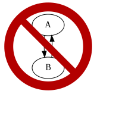

Loading...
This presentation is an HTML5 website
Press → key to advance.
Having issues seeing the presentation? Read the disclaimer
- ← and → to move around.
- Ctrl/Command and + or - to zoom in and out if slides don’t fit.
- S to view page source.
- T to change the theme.
- H to toggle syntax highlight.
- N to toggle speaker notes.
- 3 to toggle 3D effect.
- 0 to toggle help.
Tooling Around with Abstract Syntax Trees
Philly PUG Meetup, August 2011
Greg Guthe, Aweber Communications
What calls what using the Queue?
Python Compilation
AST Packages
From the standard library:
- _ast - Node classes (Python 2.5+)
- ast - helper functions (Python 2.6+)
Third Party:
- pyastutil and codegen.py - ast to source
- logilab-astng
- pylint and pyreverse dependency
- Uses live objects and "New Generation" AST
- Nice expanded print_tree
- Tracks scope with breadth first visitors
- All the docs I could find: A Short Introduction
What's an abstract syntax tree (AST)?
A tree representing the abstract syntactic structure of source code.
Wikipedia>>> import ast >>> code = "print 'hello world'" >>> ast.parse(code) <_ast.Module object at 0x100493990> >>> ast.dump(ast.parse(code)) "Module(body=[Print(dest=None, values=[Str(s='hello world')], nl=True)])" >>>
OK, an AST is some sort of tree.
What's a tree?
A tree is a directed, acyclic, rooted graph where all edges point away from the root.
Huh?
What's a graph?
Nodes joined by edges
What's a directed graph?
Edges have a direction
(hopscotch, board games)
What's an acyclic graph?
No cycles or loops
What's a rooted graph?
Has a special root node
One of these is a rooted graph
What's a tree again?
A tree is a directed, acyclic, rooted graph where all edges point away from the root.
(boring game of shoots and ladders)What's in the ast module?
import ast
import inspect
ast_ast = ast.parse(inspect.getsource(ast))
for node in ast.iter_child_nodes(ast_ast):
if isinstance(node, ast.FunctionDef) or isinstance(node, ast.ClassDef):
print node.name
else:
print node
<_ast.Expr object at 0x10064b3d0>
<_ast.ImportFrom object at 0x10064b450>
<_ast.ImportFrom object at 0x10064b4d0>
parse
literal_eval
dump
copy_location
fix_missing_locations
increment_lineno
iter_fields
iter_child_nodes
get_docstring
walk
NodeVisitor
NodeTransformer
How do I visit all the nodes?
import ast
class AllVisitor(ast.NodeVisitor):
def visit_Module(self, node):
print node
AllVisitor().visit(ast.parse("def foo(): pass"))
<_ast.Module object at 0x1004aa150>
How do I visit all the nodes?
class PrintVisitor(ast.NodeVisitor):
def visit_Module(self, node):
print 'Modular Monkeys'
# See the kids
self.generic_visit(node)
def generic_visit(self, node):
print node
ast.NodeVisitor.generic_visit(self, node)
PrintVisitor().visit(ast.parse("def foo(): print 'bar';"))
Modular Monkeys
<_ast.Module object at 0x1004aa210>
<_ast.FunctionDef object at 0x1004aa250>
<_ast.arguments object at 0x1004aa290>
<_ast.Print object at 0x1004aa2d0>
<_ast.Str object at 0x1004aa310>
Where are the print statements?
import ast
class PrintVisitor(ast.NodeVisitor):
def visit_Print(self, node):
print "line:", node.lineno,
print "column:", node.col_offset
print node, "value:", node.values[0].s
# See the kids
self.generic_visit(node)
PrintVisitor().visit(ast.parse("def foo(): print 'bar'"))
line: 1 column: 11
<_ast.Print object at 0x1004ab210> value: bar
Renaming Variables
import ast
import astutil.codegen
class NamePrivatizer(ast.NodeTransformer):
def visit_Name(self, node):
return ast.copy_location(
ast.Name(id='_' + node.id), node
)
# Visit my kids too
self.generic_visit(node)
public_ast = ast.parse("print 'hi'; dog = foo;")
private_ast = NamePrivatizer().visit(public_ast)
print repr(astutil.codegen.to_source(private_ast))
"print 'hi'\n_dog = _foo"
Back Up The Tree: Parents?
class StackVisitor(ast.NodeVisitor):
...
def restack(self, node):
if not isinstance(node, ast.Module):
stack = self.stack
while True:
parent = stack.pop()
if node in ast.iter_child_nodes(parent):
stack.append(parent)
stack.append(node)
break
self.stack = node.stack = stack
else:
assert not hasattr(self, 'stack')
# A Module node must be the AST root and stack base
self.stack = [node]
# Keep a copy of the stack because self.stack changes
node.stack = copy.copy(self.stack)
def generic_visit(self, node):
self.restack(node)
ast.NodeVisitor.generic_visit(self, node)